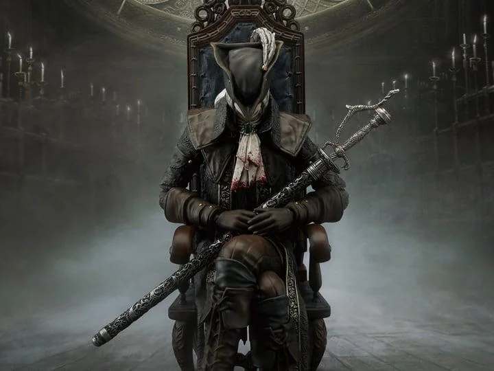
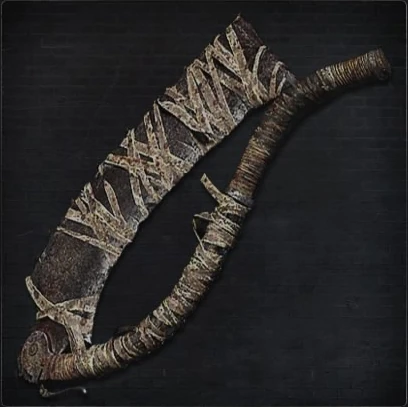
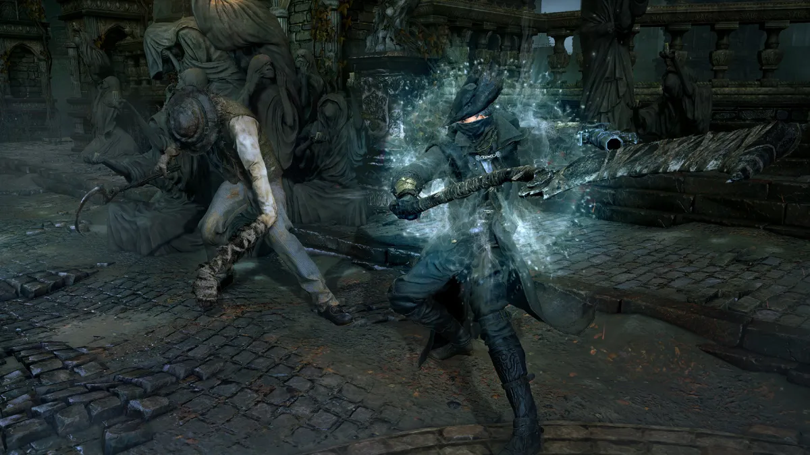
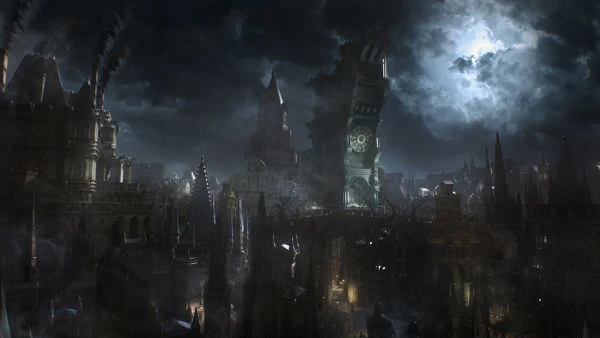

The Most Known Things From BloodBorne

Lady Maria of the Astral Clocktower: A fast-paced, highly stylish hunter boss who uses blood and fire blade arts inside an iconic clocktower.

Saw Cleaver: The cover-art trick weapon that rapidly folds in and out mid-combo to slice through beasts with serrated edges.

The Rally System: A unique combat system that rewards aggressive play by allowing players to regenerate recently lost health by attacking back quickly.

Insight: A stat measuring your character's cosmic knowledge; higher Insight literally reveals hidden eldritch monsters attached to buildings in Yharnam.

Central Yharnam: The opening Gothic city area, famous for its dense Victorian architecture, fog-filled streets, and rabid mobs carrying torches and pitchforks .